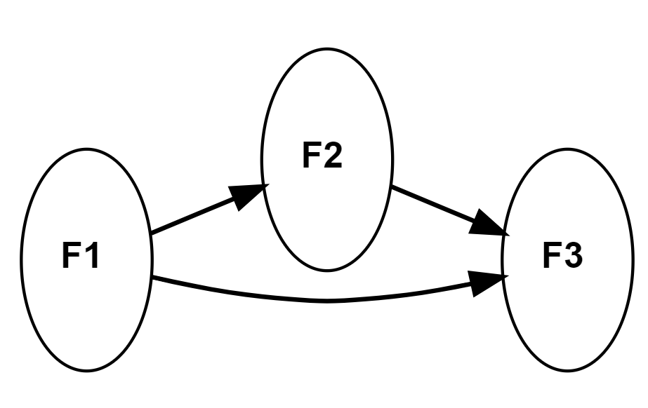

Basics of SEM
Measurement model
measurement part of a a full SEM model
confirmatory factor analysis
Structural model
relationship between constructs
full sem model is combination of measurement and structural component

Major operators of lavaan syntax

Major operators of lavaan syntax

Major operators of lavaan syntax
Fit indices
Goodness of fit indices
- Goodness-of-fit index (GFI)
- Adjusted goodness-fit-index (AGFI)
- Comparative fit index (CFI)
- Normed fit index (NFI)
- Non-normed fit index (NNF)
Badness of fit indices
- Standard root mean square of the residuals (SRMR)
- Root mean square error of approximation (RMSEA)

Reliability and validity test
Reliability test
- Composite reliability
Validity test
Convergent validity
Discriminant validity

GOF measures between structural and CFA model
gof_indices <- c('chisq', 'df','pvalue', "gfi",
'rmsea', 'rmr', 'srmr', 'nfi',
'nnfi', 'cfi', 'agfi')
fitmeasures(sem_fit, fit.measures = gof_indices)
chisq df pvalue gfi rmsea rmr srmr nfi nnfi cfi
287.179 181.000 0.000 0.938 0.038 0.410 0.060 0.936 0.971 0.975
agfi
0.921
fitmeasures(cfa_fit, fit.measures = gof_indices)
chisq df pvalue gfi rmsea rmr srmr nfi nnfi cfi
240.738 179.000 0.001 0.947 0.029 0.414 0.036 0.946 0.983 0.985
agfi
0.932 
Major operators of SEMinR syntax
Major operators of SEMinR syntax
2. Describe the structural model of causal relationships between constructs
## specifying measurement model
mm <- constructs(
composite(construct_name = "F1", item_names = multi_items("x", 1:4)),
composite("F2", multi_items("x", 5:8)),
composite("F3", multi_items("x", 9:12)))
## specifying structural model
sm <- relationships(
paths(from = "F1", to = "F2"),
paths(from = c("F1", "F2"), to = "F3"))
plot(sm)